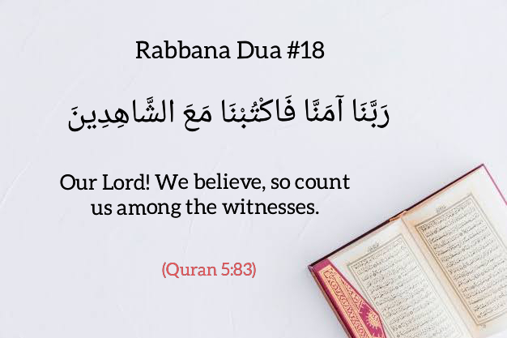
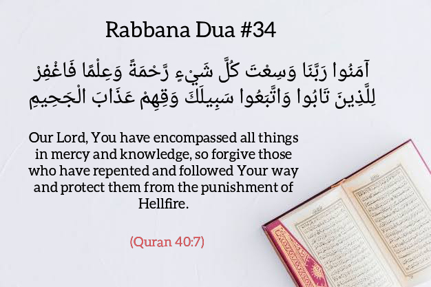

Dua is the simplest way a Muslim can communicate and establish a connection with Allah(s.w.t). It is an important part of our faith and belief. In the Quran Surah Baqarah ayah no.:186 Allah(s.w.t) says, “When my servants ask you about me, (tell them), I am really close to them, I listen to the prayer of each supplicant when he invokes me”.
Making Dua is similar to establishing prayer, it’s a way for us to express the remembrance of Allah(s.w.t). Each dua you make takes a step closer to Allah(s.w.t) and an opportunity to ask him to implore his blessings and mercy upon you.
In the Quran Allah(s.w.t) has revealed 40 duas known as the 40 Rabbana Duas . The reason is because they all begin with the Arabic word “Rabbana” which means “Our Lord” . These Quranic Duas ask Allah(s.w.t) for anything we could possibly want in this world and the after.
40 RABBANA DUA (BEST QURANIC DUA)
Fahm E QURAN ACADEMY
Rabbana Dua #1 (Quran 2:127)
رَبَّنَا تَقَبَّلْ مِنَّا إِنَّكَ أَنْتَ السَّمِيعُ العَلِيمُ
Transliteration: Rabbana taqabbal minna innaka anta assameeAAu alAAaleem
Translation: Our Lord, accept [this] from us. Indeed You are the Hearing, the Knowing.
Rabbana Dua #2 (Quran 2:128)
رَبَّنَا وَاجْعَلْنَا مُسْلِمَيْنِ لَكَ وَمِن ذُرِّيَّتِنَا أُمَّةً مُّسْلِمَةً لَّكَ وَأَرِنَا مَنَاسِكَنَا وَتُبْ عَلَيْنَآ إِنَّكَ أَنتَ التَّوَّابُ الرَّحِيمُ
Transliteration: Rabbana wajAAalnamuslimayni laka wamin thurriyyatina ommatanmuslimatan laka waarina manasikana watubAAalayna innaka anta attawwabu arraheem
Translation: Our Lord, and make us Muslims [in submission] to You and from our descendants a Muslim nation [in submission] to You. And show us our rites and accept our repentance. Indeed, You are the Accepting of repentance, the Merciful.
Rabbana Dua #3 (Quran 2:201)
رَبَّنَا آتِنَا فِي الدُّنْيَا حَسَنَةً وَفِي الآخِرَةِ حَسَنَةً وَقِنَا عَذَابَ النَّارِ
Transliteration: Rabbana atinafee addunya hasanatan wafee al-akhiratihasanatan waqina AAathaba annar
Translation:Our Lord, give us in this world [that which is] good and in the Hereafter [that which is] good and protect us from the punishment of the Fire.
Rabbana Dua #4 (Quran 2:250)
رَبَّنَا أَفْرِغْ عَلَيْنَا صَبْراً وَثَبِّتْ أَقْدَامَنَا وَانصُرْنَا عَلَى القَوْمِ الكَافِرِينَ
Transliteration: Rabbana afrigh AAalayna sabranwathabbit aqdamana wansurnaAAala alqawmi alkafireen
Translation: Our Lord, pour upon us patience and plant firmly our feet and give us victory over the disbelieving people.
Rabbana Dua #5 (Quran 2:286)
رَبَّنَا لاَ تُؤَاخِذْنَا إِن نَّسِينَا أَوْ أَخْطَأْنَا
Transliteration: Rabbana latu-akhithna in naseena aw akhta/na
Translation:Our Lord, do not impose blame upon us if we have forgotten or erred.
Rabbana Dua #6 (Quran 2:286)
رَبَّنَا وَلاَ تَحْمِلْ عَلَيْنَا إِصْرًا كَمَا حَمَلْتَهُ عَلَى الَّذِينَ مِن قَبْلِنَا
Transliteration: Rabbana wala tahmil AAalayna isrankama hamaltahu AAala allatheena minqablina
Translation: Our Lord, and lay not upon us a burden like that which You laid upon those before us.
Rabbana Dua #7 (Quran 2:286)

رَبَّنَا وَلاَ تُحَمِّلْنَا مَا لاَ طَاقَةَ لَنَا بِهِ وَاعْفُ عَنَّا وَاغْفِرْ لَنَا وَارْحَمْنَا أَنتَ مَوْلاَنَا فَانصُرْنَا عَلَى الْقَوْمِ الْكَافِرِينَ
Transliteration: Rabbana wala tuhammilnama la taqata lana bihi waAAfuAAanna waghfir lana warhamnaanta mawlana fansurna AAalaalqawmi alkafireen
Translation: Our Lord, and burden us not with that which we have no ability to bear. And pardon us; and forgive us; and have mercy upon us. You are our protector, so give us victory over the disbelieving people.
Rabbana Dua #8 (Quran 3:8)
رَبَّنَا لاَ تُزِغْ قُلُوبَنَا بَعْدَ إِذْ هَدَيْتَنَا وَهَبْ لَنَا مِن لَّدُنكَ رَحْمَةً إِنَّكَ أَنتَ الْوَهَّابُ
Transliteration: Rabbana la tuzigh quloobanabaAAda ith hadaytana wahab lana min ladunkarahmatan innaka anta alwahhab
Translation:Our Lord, let not our hearts deviate after You have guided us and grant us from Yourself mercy. Indeed, You are the Bestower.
Rabbana Dua #9 (Quran 3:9)
رَبَّنَا إِنَّكَ جَامِعُ النَّاسِ لِيَوْمٍ لاَّ رَيْبَ فِيهِ إِنَّ اللّهَ لاَ يُخْلِفُ الْمِيعَادَ
Transliteration: Rabbana innaka jamiun nasi liyawmin la rayba feehi inna Allaha layukhlifu almeeAAad
Translation:Our Lord, surely You will gather the people for a Day about which there is no doubt. Indeed, Allah does not fail in His promise.
Rabbana Dua #10 (Quran 3:16)
رَبَّنَا إِنَّنَا آمَنَّا فَاغْفِرْ لَنَا ذُنُوبَنَا وَقِنَا عَذَابَ النَّارِ
Transliteration: Rabbana innana amanna faghfir lana thunoobanawaqina AAathaba annar
Translation:Our Lord, indeed we have believed, so forgive us our sins and protect us from the punishment of the Fire.
Rabbana Dua #11 (Quran 3:53)
رَبَّنَآ ءَامَنَّا بِمَآ أَنزَلْتَ وَٱتَّبَعْنَا ٱلرَّسُولَ فَٱكْتُبْنَا مَعَ ٱلشَّٰهِدِينَ
Transliteration:Rabbana amanna bimaanzalta wattabaAAna arrasoola faktubnamaAAa ashshahideen
Translation:Our Lord, we have believed in what You revealed and have followed the messenger Jesus, so register us among the witnesses [to truth].
Rabbana Dua #12 (Quran 3:147)
ربَّنَا اغْفِرْ لَنَا ذُنُوبَنَا وَإِسْرَافَنَا فِي أَمْرِنَا وَثَبِّتْ أَقْدَامَنَا وانصُرْنَا عَلَى الْقَوْمِ الْكَافِرِينَِ
Transliteration:Rabbana ighfir lana thunoobanawa-israfana fee amrina wathabbit aqdamanawansurna AAala alqawmi alkafireen
Translation: Our Lord, forgive us our sins and the excess [committed] in our affairs and plant firmly our feet and give us victory over the disbelieving people.
Rabbana Dua #13 (Quran 3:191)
رَبَّنَا مَا خَلَقْتَ هَذا بَاطِلاً سُبْحَانَكَ فَقِنَا عَذَابَ النَّارِ
Transliteration:Rabbana ma khalaqta hatha batilan subhanakafaqina AAathaba annar
Translation: Our Lord, You did not create this aimlessly; exalted are You [above such a thing]; then protect us from the punishment of the Fire.
Rabbana Dua #14 (Quran 3:192)
رَبَّنَا إِنَّكَ مَن تُدْخِلِ النَّارَ فَقَدْ أَخْزَيْتَهُ وَمَا لِلظَّالِمِينَ مِنْ أَنصَارٍ
Transliteration: Rabbana innaka man tudkhili annarafaqad akhzaytahu wama liththalimeenamin ansar
Translation:Our Lord, indeed whoever You admit to the Fire – You have disgraced him, and for the wrongdoers there are no helpers.
Rabbana Dua #15 (Quran 3:193)
رَّبَّنَا إِنَّنَا سَمِعْنَا مُنَادِيًا يُنَادِي لِلإِيمَانِ أَنْ آمِنُواْ بِرَبِّكُمْ فَآمَنَّا
Transliteration:Rabbana innana samiAAnamunadiyan yunadee lil-eemani an aminoobirabbikum faamanna
Translation: Our Lord, indeed we have heard a caller calling to faith, [saying], ‘Believe in your Lord,’ and we have believed.
Rabbana Dua #16 (Quran 3:193)
رَبَّنَا فَاغْفِرْ لَنَا ذُنُوبَنَا وَكَفِّرْ عَنَّا سَيِّئَاتِنَا وَتَوَفَّنَا مَعَ الأبْرَارِ
Transliteration:Rabbana faghfirlana thunoobana wakaffir AAannasayyi-atina watawaffana maAAa al-abrar
Translation: Our Lord, so forgive us our sins and remove from us our misdeeds and cause us to die with the righteous.
Rabbana Dua #17 (Quran 3:194)
رَبَّنَا وَآتِنَا مَا وَعَدتَّنَا عَلَى رُسُلِكَ وَلاَ تُخْزِنَا يَوْمَ الْقِيَامَةِ إِنَّكَ لاَ تُخْلِفُ الْمِيعَاد
Transliteration:Rabbana waatina mawaAAadtana AAala rusulika wala tukhzinayawma alqiyamati innaka la tukhlifu almeeAAad
Translation: Our Lord, and grant us what You promised us through Your messengers and do not disgrace us on the Day of Resurrection. Indeed, You do not fail in [Your] promise.
Rabbana Dua #18 (Quran 5:83)

رَبَّنَا آمَنَّا فَاكْتُبْنَا مَعَ الشَّاهِدِينَ
Transliteration:Rabbana amanna faktubna maAAa ashshahideen
Translation: Our Lord! We believe, so count us among the witnesses.
Rabbana Dua #19 (Quran 5:114)
رَبَّنَا أَنزِلْ عَلَيْنَا مَآئِدَةً مِّنَ السَّمَاء تَكُونُ لَنَا عِيداً لِّأَوَّلِنَا وَآخِرِنَا وَآيَةً مِّنكَ وَارْزُقْنَا وَأَنتَ خَيْرُ الرَّازِقِينَ
Transliteration:Rabbana anzil AAalayna ma-idatan mina assama-itakoonu lana AAeedan li-awwalina waakhirinawaayatan minka warzuqna waanta khayru arraziqeen
Translation: O Allah, our Lord! Send us from heaven a table spread (with food) that there may be for us – for the first and the last of us – a festival and a sign from You; and provide us sustenance, for You are the Best of sustainers.
Rabbana Dua #20 (Quran 7:23)
رَبَّنَا ظَلَمْنَا أَنفُسَنَا وَإِن لَّمْ تَغْفِرْ لَنَا وَتَرْحَمْنَا لَنَكُونَنَّ مِنَ الْخَاسِرِينَ
Transliteration: Rabbana zalamna anfusana wa-in lam taghfir lana watarhamnalanakoonanna mina alkhasireen
Translation:Our Lord, we have wronged ourselves, and if You do not forgive us and have mercy upon us, we will surely be among the losers.
Rabbana Dua #21 (Quran 7:47)
رَبَّنَا لاَ تَجْعَلْنَا مَعَ الْقَوْمِ الظَّالِمِينَ
Transliteration:Rabbana la taj’alna ma’al qawwmi-dhalimeen
Translation:Our Lord, do not place us with the wrongdoing people.
Rabbana Dua #22 (Quran 7:89)
رَبَّنَا افْتَحْ بَيْنَنَا وَبَيْنَ قَوْمِنَا بِالْحَقِّ وَأَنتَ خَيْرُ الْفَاتِحِينَ
Transliteration:Rabbana iftah baynana wabayna qawmina bilhaqqiwaanta khayru alfatiheen
Translation:Our Lord, decide between us and our people in truth, and You are the best of those who give decision..
Rabbana Dua #23 (Quran 7:126)
رَبَّنَا أَفْرِغْ عَلَيْنَا صَبْرًا وَتَوَفَّنَا مُسْلِمِينَ
Transliteration:Rabbana afrigh AAalaynasabran watawaffana muslimeen
Translation:Our Lord, pour upon us patience and let us die as Muslims [in submission to You].
Rabbana Dua #24 (Quran 10:85-86)
رَبَّنَا لاَ تَجْعَلْنَا فِتْنَةً لِّلْقَوْمِ الظَّالِمِينَ ; وَنَجِّنَا بِرَحْمَتِكَ مِنَ الْقَوْمِ الْكَافِرِينَ
Transliteration:Rabbana la tajAAalnafitnatan lilqawmi aththalimeen Wanajjina birahmatika minaalqawmi alkafireen
Translation: Our Lord, make us not [objects of] trial for the wrongdoing people And save us by Your mercy from the disbelieving people.
Rabbana Dua #25 (Quran 14:38)
رَبَّنَا إِنَّكَ تَعْلَمُ مَا نُخْفِي وَمَا نُعْلِنُ وَمَا يَخْفَى عَلَى اللّهِ مِن شَيْءٍ فَي الأَرْضِ وَلاَ فِي السَّمَاء
Transliteration:Rabbana innaka taAAlamu manukhfee wama nuAAlinu wama yakhfa AAalaAllahi min shay-in fee al-ardi wala fee assama
Translation: Our Lord, indeed You know what we conceal and what we declare, and nothing is hidden from Allah on the earth or in the heaven.
Rabbana Dua #26 (Quran 14:40)
رَبَّنَا وَتَقَبَّلْ دُعَاء
Transliteration: Rabbana wtaqabbal duAAa
Translation: Our Lord, and accept my supplication.
Rabbana Dua #27 (Quran 14:41)
رَبَّنَا اغْفِرْ لِي وَلِوَالِدَيَّ وَلِلْمُؤْمِنِينَ يَوْمَ يَقُومُ الْحِسَابُ
Transliteration: Rabbana ighfir lee waliwalidayyawalilmu/mineena yawma yaqoomu alhisab
Translation: Our Lord, forgive me and my parents and the believers the Day the account is established.
Rabbana Dua #28 (Quran 18:10)
رَبَّنَا آتِنَا مِن لَّدُنكَ رَحْمَةً وَهَيِّئْ لَنَا مِنْ أَمْرِنَا رَشَدًا
Transliteration:Rabbana atina minladunka rahmatan wahayyi/ lana min amrinarashada
Translation: Our Lord, grant us from Yourself mercy and prepare for us from our affair right guidance.
Rabbana Dua #29 (Quran 20:45)
رَبَّنَا إِنَّنَا نَخَافُ أَن يَفْرُطَ عَلَيْنَا أَوْ أَن يَطْغَى
Transliteration:Rabbana innananakhafu an yafruta AAalayna aw an yatgha
Translation: Our Lord, indeed we are afraid that he will hasten [punishment] against us or that he will transgress.
Rabbana Dua #30 (Quran 23:109)
رَبَّنَا آمَنَّا فَاغْفِرْ لَنَا وَارْحَمْنَا وَأَنتَ خَيْرُ الرَّاحِمِينَ
Transliteration: Rabbana amanna faghfirlana warhamna waanta khayru arrahimeen
Translation: Our Lord, we have believed, so forgive us and have mercy upon us, and You are the best of the merciful.
Rabbana Dua #31 (Quran 25:65-66)
رَبَّنَا اصْرِفْ عَنَّا عَذَابَ جَهَنَّمَ إِنَّ عَذَابَهَا كَانَ غَرَامًا إِنَّهَا سَاءتْ مُسْتَقَرًّا وَمُقَامًا
Transliteration: Rabbana isrif AAanna AAathaba jahannama inna AAathabahakana gharama Innaha saat mustaqarran wamuqama
Translation: Our Lord, avert from us the punishment of Hell. Indeed, its punishment is ever adhering; Indeed, it is evil as a settlement and residence.
Rabbana Dua #32 (Quran 25:74)
رَبَّنَا هَبْ لَنَا مِنْ أَزْوَاجِنَا وَذُرِّيَّاتِنَا قُرَّةَ أَعْيُنٍ وَاجْعَلْنَا لِلْمُتَّقِينَ إِمَامًا
Transliteration:Rabbana hablana min azwajina wathurriyyatinaqurrata aAAyunin wajAAalna lilmuttaqeena imama
Translation: Our Lord, grant us from among our wives and offspring comfort to our eyes and make us an example for the righteous.
Rabbana Dua #33 (Quran 35:34)
رَبَّنَا لَغَفُورٌ شَكُورٌ
Transliteration: Rabbana laghafoorun shakoor
Translation: Our Lord is Forgiving and Appreciative.
Rabbana Dua #34 (Quran 40:7)

آمَنُوا رَبَّنَا وَسِعْتَ كُلَّ شَيْءٍ رَّحْمَةً وَعِلْمًا فَاغْفِرْ لِلَّذِينَ تَابُوا وَاتَّبَعُوا سَبِيلَكَ وَقِهِمْ عَذَابَ الْجَحِيمِ
Transliteration:Amanoo Rabbana wasiAAta kulla shay-in rahmatan waAAilmanfaghfir lillatheena taboo wattabaAAoosabeelaka waqihim AAathaba aljaheem
Translation: Our Lord, You have encompassed all things in mercy and knowledge, so forgive those who have repented and followed Your way and protect them from the punishment of Hellfire.
Rabbana Dua #35 (Quran 40:8-9)
رَبَّنَا وَأَدْخِلْهُمْ جَنَّاتِ عَدْنٍ الَّتِي وَعَدتَّهُم وَمَن صَلَحَ مِنْ آبَائِهِمْ وَأَزْوَاجِهِمْ وَذُرِّيَّاتِهِمْ إِنَّكَ أَنتَ الْعَزِيزُ الْحَكِيمُ وَقِهِمُ السَّيِّئَاتِ وَمَن تَقِ السَّيِّئَاتِ يَوْمَئِذٍ فَقَدْ رَحِمْتَهُ وَذَلِكَ هُوَ الْفَوْزُ الْعَظِيمُ
Transliteration:Rabbana waadkhilhum jannatiAAadnin allatee waAAadtahum waman salaha min aba-ihimwaazwajihim wathurriyyatihim innaka antaalAAazeezu alhakeem Waqihimu assayyi-ati wamantaqi assayyi-ati yawma-ithin faqad rahimtahuwathalika huwa alfawzu alAAatheem
Translation: Our Lord, and admit them to gardens of perpetual residence which You have promised them and whoever was righteous among their fathers, their spouses and their offspring. Indeed, it is You who is the Exalted in Might, the Wise. And protect them from the evil consequences [of their deeds]. And he whom You protect from evil consequences that Day – You will have given him mercy. And that is the great attainment.
Rabbana Dua #36 (Quran 59:10)
رَبَّنَا اغْفِرْ لَنَا وَلِإِخْوَانِنَا الَّذِينَ سَبَقُونَا بِالْإِيمَانِ وَلَا تَجْعَلْ فِي قُلُوبِنَا غِلًّا لِّلَّذِينَ آمَنُوا
Transliteration: Rabbana ighfir lana wali-ikhwaninaallatheena sabaqoona bil-eemani walatajAAal fee quloobina ghillan lillatheena amanoo
Translation:Our Lord, forgive us and our brothers who preceded us in faith and put not in our hearts [any] resentment toward those who have believed.
Rabbana Dua #37 (Quran 59:10)
رَبَّنَا إِنَّكَ رَؤُوفٌ رَّحِيمٌ
Transliteration: Rabbana innaka raoofun raheem
Translation:Our Lord, indeed You are Kind and Merciful.
Rabbana Dua #38 (Quran 60:4)
رَّبَّنَا عَلَيْكَ تَوَكَّلْنَا وَإِلَيْكَ أَنَبْنَا وَإِلَيْكَ الْمَصِيرُ
Transliteration: RabbanaAAalayka tawakkalna wa-ilayka anabna wa-ilayka almaseer
Translation: Our Lord, upon You we have relied, and to You we have returned, and to You is the destination.
Rabbana Dua #39 (Quran 60:5)
رَبَّنَا لَا تَجْعَلْنَا فِتْنَةً لِّلَّذِينَ كَفَرُوا وَاغْفِرْ لَنَا رَبَّنَا إِنَّكَ أَنتَ الْعَزِيزُ الْحَكِيمُ
Transliteration:Rabbana la tajAAalnafitnatan lillatheena kafaroo waghfir lanarabbana innaka anta alAAazeezu alhakeem
Translation: Our Lord, make us not [objects of] torment for the disbelievers and forgive us, our Lord. Indeed, it is You who is the Exalted in Might, the Wise.
Rabbana Dua #40(Quran 66:8)
رَبَّنَا أَتْمِمْ لَنَا نُورَنَا وَاغْفِرْ لَنَا إِنَّكَ عَلَى كُلِّ شَيْءٍ قَدِيرٌ
Transliteration: Rabbana atmim lana noorana waghfir lanainnaka AAala kulli shay-in qadeer
Translation: Our Lord, perfect for us our light and forgive us. Indeed, You are over all things competent.